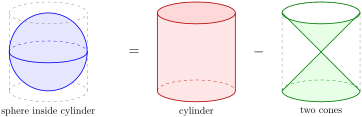
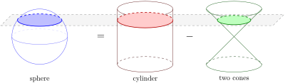

It turns out, we can derive the volume of a sphere from 2 formulas we already know: the volume of a cylinder and the volume of a cone.
Consider a sphere, with a radius \(r\text{.}\) It fits exactly inside a cylinder of radius \(r\) and height \(2r\) (like a ball in a can).

The key fascinating insight is: the volume of the sphere can be thought of as the volume of the entire cylinder, minus the volume of two cones, each with base radius \(r\) and height \(r\text{,}\) placed inside the cylinder with their tips meeting at the center of the sphere.

To see why, slice all three shapes at the same height. At each level, the sphere’s cross-section has the same area as the cylinder’s cross-section, minus the cones’ cross-section,

This means that the volume of the sphere is the volume of the cylinder, minus the volume of the two cones.
-
The cylinder has volume,\begin{equation*} V_{\text{cyl}} = \pi r^2 \cdot 2r = 2\pi r^3 \end{equation*}
-
\begin{align*} V_{2 \text{ cones}} \amp= 2 \cdot \frac{1}{3}\pi r^2 \cdot r\\ \amp= \frac{2}{3}\pi r^3 \end{align*}
Then, to get the volume of the sphere, subtract the volume of the 2 cones from the volume of the cylinder,
\begin{align*}
V_{\text{sphere}} \amp= V_{\text{cyl}} - V_{2 \text{ cones}}\\
\amp= 2\pi r^3 - \frac{2}{3}\pi r^3\\
\amp= \frac{4}{3}\pi r^3
\end{align*}